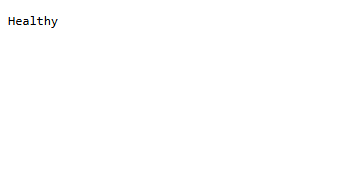
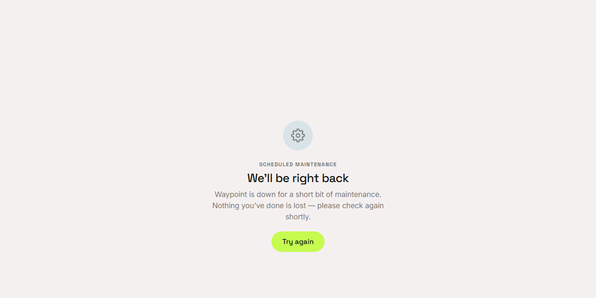

Waypoint · Video 107
Running and watching Waypoint
Health checks, logs, tools and maintenance mode
Alive, and ready
Alive: the process is running

Ready: the database is reachable
A trail for every request
A correlation id comes back with every response
The same id is attached to the log entries for that request
Error reports in the log are redacted
Operational jobs
A command line tool for the database, users, invitations and cohorts
Imports, reports and badge awards
The same rules and checks as the website
In production, missing settings stop the start-up
Maintenance mode

Nothing you've done is lost
Things to remember
Two health checks: alive, and ready
A reference number follows every request through the logs
A command line tool applies the same rules as the website
People see a plain page during maintenance